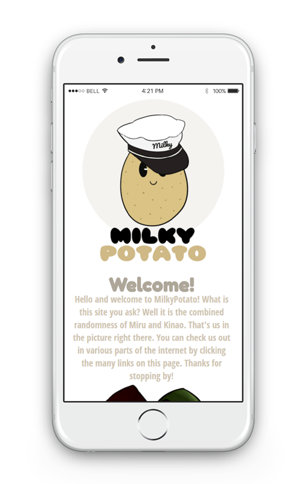

Milky Potato was a fun website to design because of its lighthearted mood and graphics. I tried to pick a very soft color pallette when designing the logo and website. I also carried it over into an animated version of the logo for use in Milky Potato’s YouTube videos. I recently updated it to Wordpress so it might look different than my images.
Visit the site